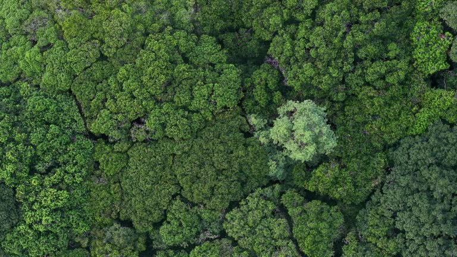
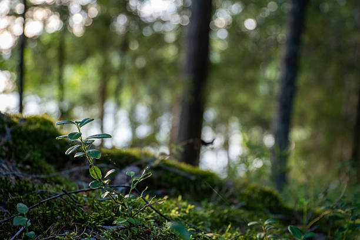
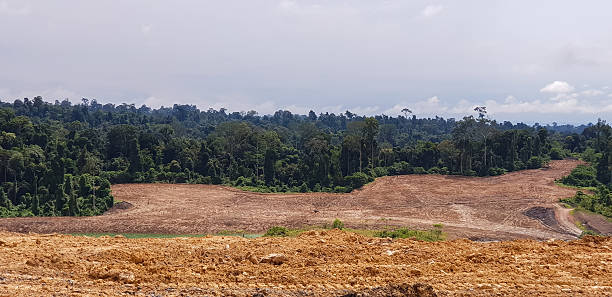
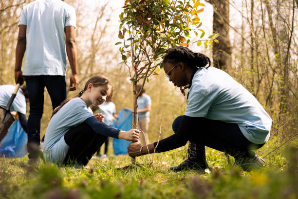

Forests and the species living within them rarely get discussed in the same breath as solar panels or sea walls, yet they perform the same basic job: they keep the climate system stable enough for everything else to function. This page looks at why intact ecosystems count as infrastructure, what is lost when they are damaged, and what a realistic, student-scale response looks like.
Forests as Climate Infrastructure
"Infrastructure" usually brings to mind roads, power grids, or water treatment plants — built systems that keep a society running. Forests, wetlands, and coral reefs do an equivalent job for the climate system itself. They absorb and store carbon, regulate rainfall, buffer coastlines against storms, and moderate local temperatures, all without a single engineer laying a foundation.
Unlike concrete infrastructure, ecosystems are self-repairing when left alone, but they are also far more fragile to sustained damage: a flood wall can usually be rebuilt after a storm, while an old-growth forest cleared for farmland can take centuries to recover the same carbon storage and biodiversity, if it recovers at all.
How Forests Regulate the Climate

Carbon Storage
Trees absorb carbon dioxide as they grow and lock it away in trunks, roots, and soil for decades or centuries. Tropical rainforests alone are estimated to store roughly a quarter of all carbon held in land ecosystems worldwide, making them one of the largest active carbon reservoirs outside the ocean.
Water Cycling
Large forests, particularly tropical ones, generate a significant share of their own rainfall by releasing water vapour from their leaves. Remove enough forest cover and rainfall patterns shift not just locally, but for entire regions downwind — a process already observed at the edges of the Amazon basin.
Local Cooling
Tree cover lowers surrounding air temperature through shade and evapotranspiration, which is why urban tree-planting is now treated as a heatwave-adaptation measure in its own right, not just a landscaping choice.
Biodiversity and Resilience

A biodiverse ecosystem is generally a more resilient one. A forest with many species of tree, insect, and fungus can usually absorb a disease outbreak, a drought year, or a wildfire and recover its function, because different species fail and recover on different schedules. A monoculture plantation, by contrast, can lose most of its trees to a single pest or disease in one season.
This matters for climate adaptation specifically: the same biodiversity that helps a forest survive a bad year is what keeps its carbon storage and water-cycling functions intact when the climate becomes less predictable, which is exactly the trend most regions are now experiencing.
Deforestation and Its Climate Cost

When forest is cleared, two things happen to the climate at once. First, the carbon stored in the trees and soil is released, mostly through burning or decomposition. Second, the ecosystem's ongoing carbon absorption stops, so the loss compounds every year the land stays cleared. Combined, land-use change and forestry are estimated to account for roughly a tenth of global greenhouse gas emissions.
The knock-on effects extend beyond carbon: cleared land is more prone to flooding and landslides without root systems to hold soil in place, and local communities that depended on the forest for water regulation or flood buffering often feel the adaptation cost first, well before the global carbon accounting catches up.
Restoration and Protection Efforts

Protected Areas
National parks and legally protected reserves remain the most effective tool for halting deforestation where they are properly enforced, since they remove the immediate economic pressure to convert land to farming or logging.
Community-Led Restoration
Locally led replanting and agroforestry projects tend to have higher long-term survival rates than large top-down planting schemes, because nearby communities have a direct stake in the land continuing to thrive.
None of this restoration work is instant. A newly planted forest can take twenty to thirty years before it stores carbon or supports biodiversity anywhere near the level of the mature forest it replaced, which is why protecting existing forest is consistently rated as more effective than restoration alone.
Common Myths
What You Can Do
Protecting existing ecosystems is largely a policy and land-use issue, but individual choices still add up, particularly around the products that drive deforestation demand.
- Check for deforestation-free or sustainably certified labels on wood, paper, and palm-oil products before buying.
- Support or volunteer with local tree-planting and habitat restoration groups, such as the programmes listed on our Feedback page.
- Reduce food waste, since agricultural expansion for food production is one of the leading drivers of tropical deforestation worldwide.
- Talk about it: public pressure on companies and policymakers is one of the few levers that has reliably slowed deforestation rates in specific regions.